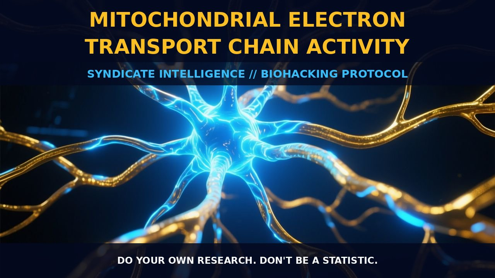

Optimizing Mitochondrial Electron Transport Chain Activity

1. The Mechanism
The mitochondrial electron transport chain (ETC) is a central component of the oxidative phosphorylation system, which is crucial for cellular energy production. This system comprises a series of protein complexes and mobile electron carriers that facilitate the transfer of electrons from NADH and FADH2 to molecular oxygen, generating a proton gradient that drives ATP synthesis through ATP synthase.
The ETC is embedded in the inner mitochondrial membrane and consists of four main protein complexes: Complex I (NADH dehydrogenase), Complex II (succinate dehydrogenase), Complex III (cytochrome bc1 complex), and Complex IV (cytochrome c oxidase), along with the mobile electron carriers ubiquinone (coenzyme Q10) and cytochrome c. Each complex plays a specific role in the transfer of electrons and the generation of a proton gradient, which is essential for ATP synthesis.
Complex I and Complex II oxidize NADH and succinate, respectively, and transfer electrons to ubiquinone. Ubiquinone then donates electrons to Complex III, which passes them to cytochrome c. Finally, cytochrome c donates electrons to Complex IV, where they are used to reduce molecular oxygen to water. This process not only generates ATP but also ensures the efficient use of oxygen and the maintenance of redox balance within the cell.
Ubiquinone, also known as coenzyme Q10, is a crucial component of the ETC as it acts as a mobile electron carrier between Complex I and Complex III. Ubiquinone is lipid-soluble and shuttles electrons from ubiquinol (the reduced form) to ubiquinone, facilitating the transfer of electrons across the mitochondrial membrane. Low cellular ubiquinone levels have been associated with various illnesses due to insufficient aerobic energy production in the cells. This highlights the importance of maintaining adequate levels of ubiquinone to support efficient electron transport and ATP production.
The ETC is not only pivotal for energy generation but also plays a role in cellular signaling and regulation of metabolic processes.
2. Biological Leverage
Enhancing mitochondrial electron transport chain activity can provide significant biological leverage for optimizing cellular function and energy production. By improving the efficiency of the ETC, cells can generate more ATP and maintain a healthy redox balance, which is crucial for various physiological processes. ATP, the primary energy currency of the cell, is recycled hundreds of times before it breaks down, and its synthesis is a continuous process that depends on the integrity and efficiency of the ETC.
The electron transport chain generates a proton gradient across the inner mitochondrial membrane, which is harnessed by ATP synthase to convert ADP and inorganic phosphate (Pi) into ATP. This process is essential for powering a wide range of cellular activities, including active transport, cell movements, and anabolism.
Moreover, the ETC plays a critical role in maintaining cellular redox balance and preventing oxidative stress. By efficiently transferring electrons to molecular oxygen, the ETC reduces the accumulation of reactive oxygen species (ROS), which can damage cellular components. This is particularly important in high-energy-demand tissues such as the brain and muscles, where oxidative phosphorylation is the primary source of ATP. Enhanced ETC activity can also support the citric acid cycle, which provides the reducing equivalents (NADH and FADH2) necessary for the ETC to function. This interconnectedness underscores the importance of maintaining optimal ETC function for overall cellular health and energy production.
Additionally, the ETC is involved in regulating cellular metabolism and signaling pathways, which can influence gene expression and cell survival.
3. Protocol Implementation
To enhance mitochondrial electron transport chain activity, several strategies can be employed. One effective approach is to supplement with ubiquinone (coenzyme Q10). Coenzyme Q10 is a well-established dietary supplement that has been used for decades to support mitochondrial function. It acts as a mobile electron carrier in the ETC, facilitating the transfer of electrons from ubiquinol to Complex III. Supplementing with coenzyme Q10 can help maintain adequate levels of ubiquinone in the cell, ensuring efficient electron transfer and ATP synthesis.
Dosage recommendations for coenzyme Q10 typically range from 100 to 300 milligrams per day, though individual needs may vary based on factors such as age, activity level, and overall health. Coenzyme Q10 is fat-soluble, so it is best absorbed when taken with a meal containing fats.
Another strategy is to support the citric acid cycle, which provides the reducing equivalents (NADH and FADH2) necessary for the ETC. This can be achieved by ensuring adequate intake of nutrients that support the citric acid cycle, such as B vitamins, magnesium, and iron. These nutrients play crucial roles in the enzymatic reactions of the citric acid cycle, ensuring that NADH and FADH2 are available for electron transfer in the ETC. Additionally, reducing exposure to heavy metals like mercury, arsenic, and aluminum, which inhibit the reactions of the citric acid cycle, can help maintain optimal mitochondrial function.
Furthermore, engaging in regular aerobic exercise can enhance ETC activity by increasing the demand for ATP and promoting the efficient use of oxygen. Aerobic exercise stimulates the production of NADH and FADH2 through glycolysis and fatty acid oxidation, providing a steady supply of reducing equivalents for the ETC. This increased demand for ATP can lead to the upregulation of mitochondrial biogenesis and the enhancement of ETC components, thereby improving overall mitochondrial function and energy production.
Prostar Life Hack
Supplementing with ubiquinone (coenzyme Q10) is a simple yet effective way to enhance mitochondrial electron transport chain activity. Taking 100-300 milligrams of coenzyme Q10 daily, preferably with a meal rich in fats, can support efficient electron transfer and ATP synthesis, optimizing cellular energy production.
[ AUTHOR: LEAD TECHNICAL RESEARCHER ]